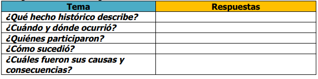

Lo que conocen los alumnos:
Preguntar a los alumnos: ¿qué es el cristianismo?, ¿por qué se le llama cristianismo?, ¿saben cuándo inició?, ¿cómo inició?.
Tratar el tema anterior de manera histórica y no religiosa. Es importante aclarar este punto con los alumnos.
Apoyarse en el siguiente enlace para ver video del cristianismo:
http://www.youtube.com/watch?v=JjtlgISe-P4&feature=relmfu
En un mapa de Europa, ubicar dónde se inició el cristianismo y hacia dónde se expandió en sus inicios. Ver el video anterior
nuevamente si es necesario.
Leer las páginas 48 y 49 sobre el cristianismo y su legado en el mundo: ¿qué herencia cultural nos dejó el mundo antiguo?,
¿qué herencia social?, ¿qué herencia material? Comentar al respecto.
Realizar un resumen de los eventos destacados. Finalizar los temas con el siguiente cuadro:
"El nacimiento del cristianismo".
"El legado del mundo antiguo".
